Atlas Motion Systems · Research
Actuators consist of up to 80% of a robot's BOM cost. They are the core robotics component that allows the robot to move. All policies train against a model of an actuator in simulation, and the industry default for this model is far from accurate. Atlas tested against real actuator physics on a quadruped, humanoid, and hands. The humanoid trained on the default physics falls in 4,554 of 4,554 episodes. But, trained on our model, it walks with zero falls. Our simulation platform also enables hardware-software co-design. The actuators that are formed are customized for the policy. The policy grades the hardware, and the hardware grades the policy.
All RL policies train against an actuator model. The default is a PD controller that has a torque clamp that can achieve 30 N·m without any ramp up. However, real motors ramp current through inductance, lose torque with speed, and derate with heat.
The current model of the actuator is incredibly inaccurate. This means that when you train a robot in simulation, it's unfaithful to the physics reality. Policies trained with an ideal/analytical actuator model "could not make a single step without falling" on ANYmal, and this is after ETH Zurich spent a week trying to tune the analytical model [1].
Atlas builds actuators and motors, and a finished design (along with our data flywheel)
contains the numbers a faithful simulation needs. So, we built
atlas_actuators,
an open source Isaac Lab plugin that turns an Atlas design into a physics-accurate training
actuator, and measured what happens when you use the default vs the true model.
It consists of a motor, a gearbox, a drive, the housings, and the shafts. It includes sensors, power electronics, and a microcontroller.
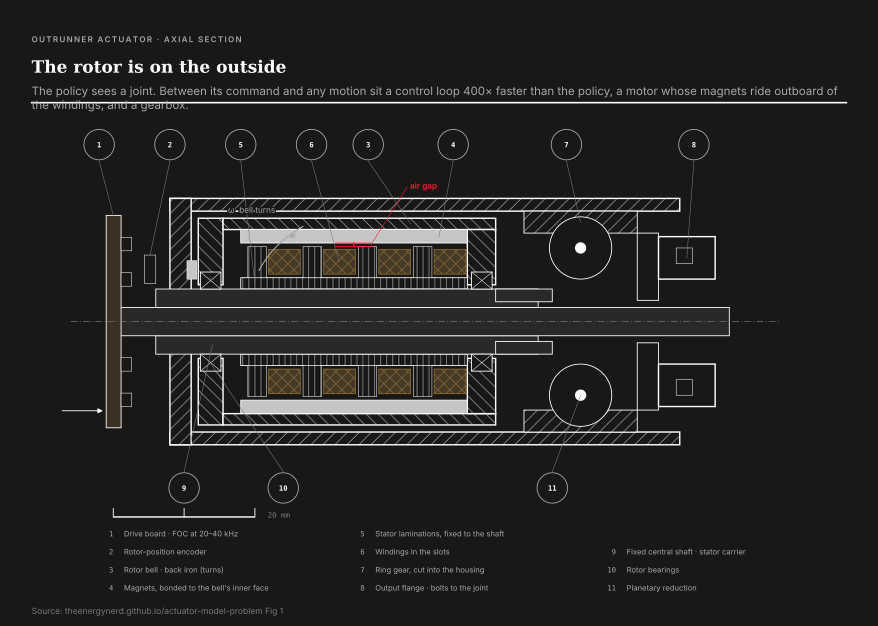
ETH Zurich's Actuator Net from 2019 takes hours of measured torque on the ANYdrive and distills it into an LSTM [1]. It transferred well, and Isaac Lab ships it today [2]. However, it describes not more than one actuator. In addition, this needs hardware to exist first, so it's unable to answer the design question of whether the motor is actually worth building.
In addition to the previously written statement that policies trained on an analytical actuator model "could not make a single step without falling" on ANYmal, after ETH spent a week tuning it, there are several other cases to note. On TOCABI, a full-size humanoid with 100:1 harmonic drives, every training seed with the baseline failed at controlling the robot [3]. On a NAO, 7/10 policies both improved in simulation and degraded the real walk [4]. Google's Minitaur "fell to the ground immediately" until they took into account torque saturation and latency (better training of domain randomization did not save it) [5]. It's obvious but still a wide hole: the better your actuator model, the better your transfer.
A finished Atlas design understands the torque constant, resistance, inductance, current limits, and thermal resistances. This includes everything that the microcontroller needs to understand how to run. Simpler models can miss the tradeoffs of torque. The reason for this is that they require a physics-based design engine that you can feed a spec (peak/continuous torque, speed, voltage rail, mass & envelope budget) and that solves the coupled problem that an actuator actually is.
For example, the electromagnetics determine the winding. The torque constant and the phase resistance are determined by the turns, the wire gauge, and the slot fill, and the magnet grade and thickness fix the airgap flux and the demagnetization margin at peak current. The magnetics then hand the thermal model a loss map, and the thermal model sizes the copper and the iron against the duty cycle, because a winding that makes the torque but cooks in ninety seconds is not a design. The mechanics close the loop: the gear ratio trades motor speed for joint torque, the tooth loads set the gear module and face width, the bearings are picked against the reaction forces, and the whole stack has to fit the envelope and hit the mass budget.
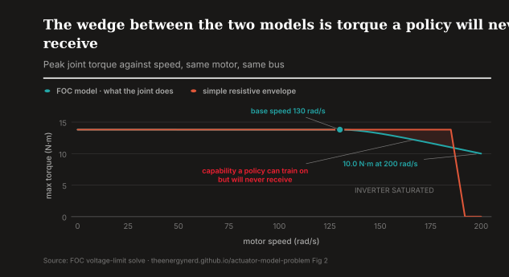
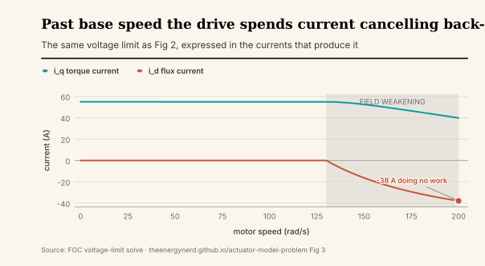
When looking at a motor catalog, it sells you a part and a page of numbers that are measured at one operating point on one sample. However, it doesn't tell you the effect of the winding at your bus voltage, your thermal enclosure, or your duty cycle. We build the part on all of those factors. The model and the hardware are optimized for the same thing.
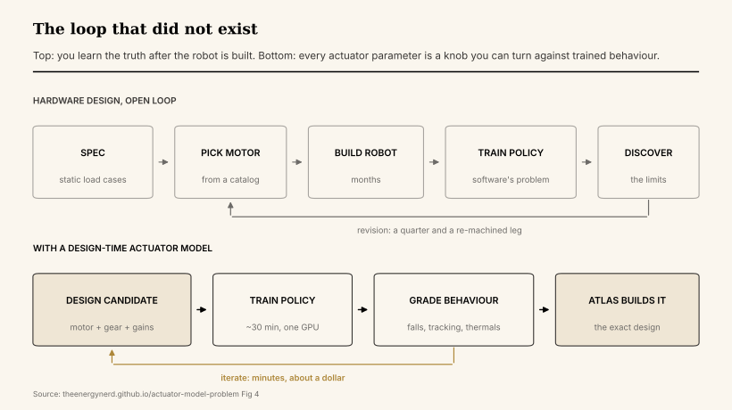
Give the design engine two different tasks for the same joint envelope and it answers with two different motors. Nothing in this table was hand-chosen. The tasks were.
| sprint-recovery task | steady-carry task | |
|---|---|---|
| what the policy demands | 14 N·m peak / 7 cont at 250 rpm | 12 N·m peak / 10 cont at 120 rpm |
| winding | 15 turns per coil, Kv 147 | 38 turns per coil, Kv 52 |
| torque constant | 0.113 N·m/A | 0.320 N·m/A |
| magnet thickness | 2.42 mm | 2.67 mm |
| stator back iron | 1.24 mm | 1.38 mm |
| stack length | 16.8 mm | 18.8 mm |
| slots / poles | 18 / 20 | 18 / 20 |
| actuator mass | 606 g | 651 g |
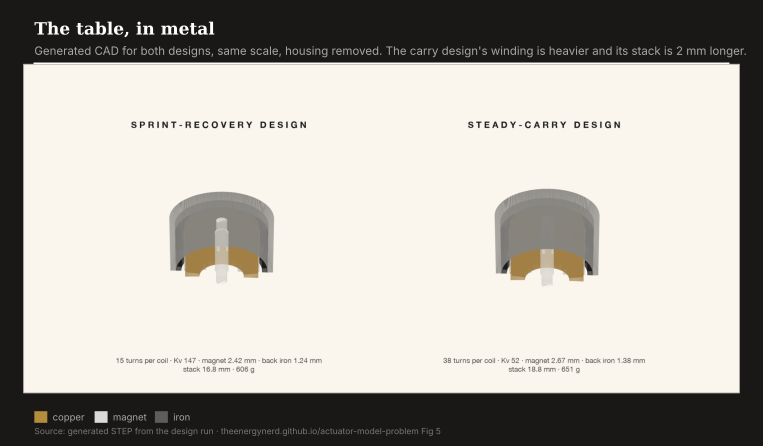
We start with the quadruped. It's statically stable, so what the actuator swap changes is attributable to the model. We performed 1,500 iterations in ANYmal-C. Policy A trained on the stock actuator net, and policy B trained on our FOC model that we developed with our data flywheel. Both are evaluated on FOC physics, which stands in for the robot that we actually build.
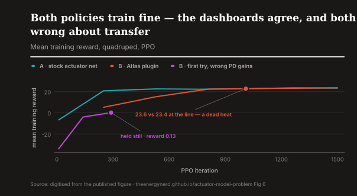
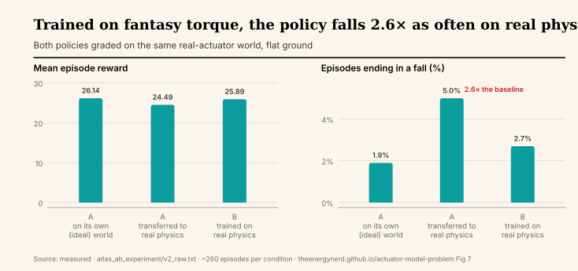
Transfer falls 5.0 / 6.3 / 5.8 percent across seeds 42/43/44. The matched policy falls 2.7 / 0.9 / 1.5. Every seed shows the penalty.
At a steady cruise, the two policies are almost identical (0.97 vs 0.95), so cruise doesn't prove much. However, shove recovery exposes the gap. Torque is demanded and the curves separate.
To find out if better training could close it, we trained both policies with ±2.0 m/s shoves:
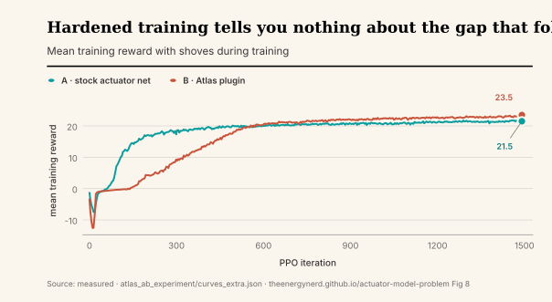
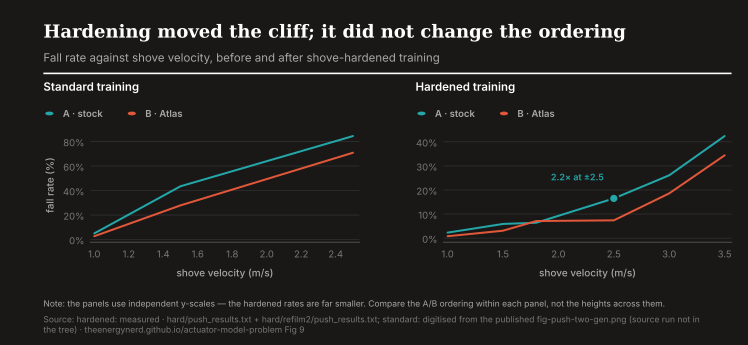
During recovery, torque is demanded at speed and the actuator stops being the thing that the policy is trained against. There are two failures that exist here. The torque envelope shrinks and the torque vector rotates.
Field oriented control creates torque by holding stator current 90 degrees ahead of rotor flux on the q-axis. The torque command is completely projected onto the rotor angle. The angle error comes from latency, as any delay in sensing and the current loop causes an error that grows with electrical speed. It's the worst at the top of a jump when the rotor spins the fastest while the robot still needs force. You can drive tens of amps of q-axis current and this causes the iron to cross-saturate. The angle of maximum torque-per-amp shifts several electrical degrees from where it sat at the gentle current the commutation offset got trimmed at. A motor calibrated in pick-and-place duty (a few amps at rest) is systematically miscommutated at its sixty-amp peak. Calibration only is honest in the regime that you calibrated in, and the robot spends a lot of time in the regimes that you did not.
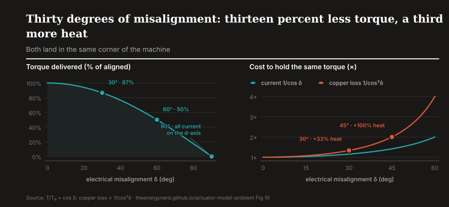
There is a cascading of misalignment. After base speed, the inverter runs out of volts against the back-EMF and torque falls away, and at the same time field weakening is already spending current to cancel back-EMF and the winding derates as it heats.
If you misdirect a newton-meter, it is multiplied by the gear ratio and becomes a joint-torque error, and this joint is just one actuator inside a whole-body controller that solves a constrained optimization on false facts.
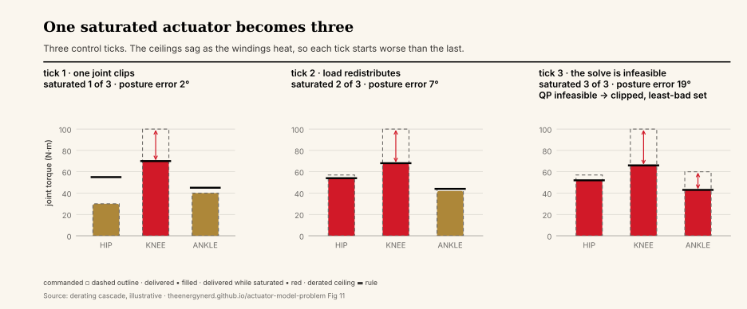
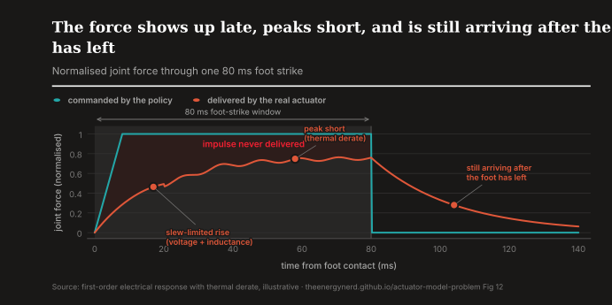
A quadruped is inherently stable, but a humanoid needs to balance. The baseline is terrible: the stock G1 task drives every joint at 300 N·m when the real knee peaks at 139.
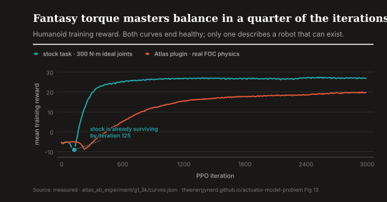
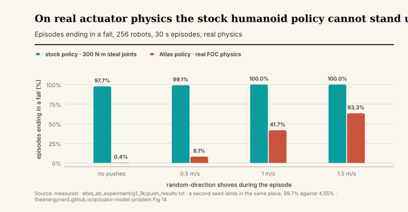
The gait chase serves as evidence, as the stock reward is satisfied by a crouch:
Getting the clip on the right produced a very sharp finding for us. The posture reward fixed the fantasy world on the first try. Trained from scratch on real physics it provided a policy that stands, perfectly stable, and never walks. Fantasy torque doesn't just distort your gait, it changes the behaviors that are reachable.
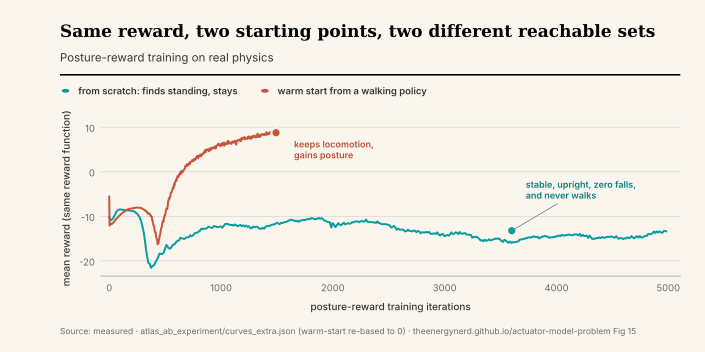
The last two rows close open loops. However, training against shoves does for the humanoid the same thing it did for the quadruped: 0.4 percent falls at ±1.0, one fall in 512 episodes. The actuator model also covers a 14-bit motor shaft encoder and gear play, modeled as a play operator whose gap traversal costs the physical fraction of a control step. Half a degree of backlash after 1,500 adaptation iterations still costs 14.3 percent of unpunished episodes. Our first backlash model gated torque for a full control step per reversal (about 10x the physical dead time) and collapsed the policy.
The quadruped pays for mismatch as a 2x robustness tax and the humanoid pays it as nonexistence.
A leg touches the ground a few times a second. A hand is in contact the whole time, and it is in contact with sixteen motors at once. That changes what the actuator model is doing. On a leg it sets a ceiling the policy occasionally reaches. On a hand it is the thing the policy lives inside.
We ran the same experiment on Isaac Lab's Allegro in-hand cube reorientation: one task, one reward, 8,192 robots, 1,300 iterations, and nothing different between the arms except the actuator. Four of them. A real finger motor (0.135 N·m continuous), a bigger one matched to the fantasy actuator's torque (0.54 N·m continuous), the stock PD-with-a-torque-clamp at 0.5 N·m, and that same clamp solved inside the physics engine.
The first thing we measured is not the score. It is whether the actuator is the binding constraint at all. It is.
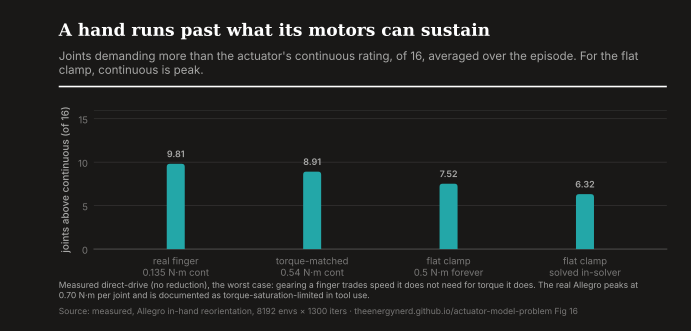
That number is not an artifact of our motor being weak. The real Allegro peaks at 0.70 N·m per joint, and it is documented as unable to handle stiff tool-use because that torque saturates [10]. The hardware is at its limit in real life too. What the simulator's default does is tell the policy that only 6 joints will be pinned when the truth is 10.
The second thing is the part we did not expect. The default model is not too generous. It is the wrong shape.
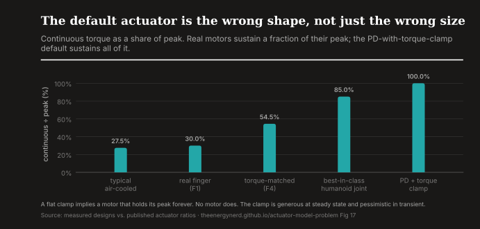
Our torque-matched motor has less flat headroom than the clamp and beats it anyway, 1.33 against 0.39 reorientations, because it can put out 0.99 N·m for a moment when the cube is slipping and then cool off. The policy uses it: the 95th percentile of its commanded torque is 0.96. The clamp never allows that instant, so a policy trained against the clamp never learns the behavior the real motor would have paid for.
The third thing is the one that matters for design. Two real finger motors, same hand, same task, same everything, and the only difference is how much continuous torque the winding can hold:
| actuator | continuous | peak | reorientations | joints pinned |
|---|---|---|---|---|
| real finger (F1) | 0.135 N·m | 0.45 N·m | 0.19 | 9.8 / 16 |
| torque-matched (F4) | 0.540 N·m | 0.99 N·m | 1.33 | 8.9 / 16 |
Seven times the task performance, for a bigger winding. That is the whole argument in one row. Nobody had to build either hand to find it out, and the design that comes back is the one we would machine.
The same cross-evaluation as the quadruped and the humanoid, all explicit so the actuator model is the only thing that moves. Train a policy against the default-shaped clamp, deploy it on the torque-matched real motor, and it completes 0.49 reorientations against 1.33 for the policy trained on the real motor — 2.7x fewer, from the model alone. On the weak finger motor the penalty vanishes, 0.23 against 0.19, because that actuator caps everyone equally; the mismatch costs you exactly where the hardware has capability the model never described.
The reverse direction is the sharper sentence. Evaluated in the clamp's own fantasy world, the policy trained on the real motor beats the policy trained there, 0.85 against 0.39. Training against the real envelope did not cost performance in the easy world. It produced the better policy in both.
There is a fourth number and it is bigger than any of the ones above. The stock clamp scores 6.47 when the physics engine solves it internally and 0.39 when the identical torque limit is applied as an explicit torque, a 17x gap from changing nothing but where the PD law is evaluated. Isaac Lab documents this: implicit actuators are integrated with the solver and are more accurate at large timesteps [12].
Every Atlas actuator is explicit, because a real motor's envelope cannot be expressed as a solver constraint. So our numbers and the stock number are not directly comparable, and we are not going to compare them. The comparisons above are all explicit against explicit, where the actuator is the only thing that moves. Anyone benchmarking an actuator model against a stock implicit baseline is measuring their integrator, not their motor. We made that mistake twice before catching it, which is why it is here rather than in a footnote.
On an ANYdrive, ETH's network is almost certainly more accurate; it absorbed friction and backlash that first principles miss. The right metric is transfer quality per dollar and week of characterization:
| actuator net (ETH) | physics-from-design (Atlas) | |
|---|---|---|
| needs the hardware to exist | yes, plus a torque-instrumented rig | no |
| marginal cost per new actuator | weeks of collection and fitting | zero; it is a design output |
| captures friction, backlash, comm delays | yes, when the data covers them | backlash and encoder quantization modeled from design parameters; friction and delays arrive through fleet telemetry |
| extrapolates to a new bus voltage, a hotter winding, a gear swap | silent; it never saw that data | answers from physics |
| thermal state, temperature-aware policies | none | winding temperature per joint, observable by the policy |
| auditable | black box | every parameter is a design quantity; energy-balance checked |
| doubles as the deployed controller | no; a simulation-only artifact | the same law compiles to the drive firmware, at 1e-6 parity |
The approaches compose. The endgame is a learned residual on a physics prior, and it belongs to whoever builds the actuator. ETH needed a rig to characterize someone else's black box from outside. We are inside, where comparing commanded against delivered torque at 20 kHz is what FOC already does. ETH characterized one actuator, once. A fleet that ships with its own characterization loop does it continuously.
The field's other routes agree on the diagnosis and pick different medicine. Berkeley Humanoid constrains the hardware to low gear ratios so the ideal model becomes nearly true [7]. Booster measures each actuator's torque-speed envelope on a bench and pastes the knee points into simulation [8]. Recent work reshapes the real actuator's own controller until it imitates the simulator's reference model [9]. Each treats the actuator model as the product. Ours is the same conclusion with a different origin: the model is emitted by the tool that designed the motor.
As robots get more neural, the engineered actuator layer does not fade. It becomes the most important layer on the robot. Policies run at 50–100 Hz. Commutation runs at 20–40 kHz with hard real-time guarantees. No network does that job, and the more the stack neuralizes, the more this is the only engineered interface left.
Every policy trains against an actuator model; the only question is whose. In a hand-tuned world a datasheet model was fine because an engineer compensated. In an RL world the model is the product interface. RL does not route around your characterization data. It consumes it.
A learned policy also cannot be the safety layer. Thermal limits, overcurrent, joint limits, and sanity when the policy outputs garbage all need guarantees, and networks do not issue them. That layer lives in firmware, which in our case is the same law the simulation runs.
The last piece is that we keep the manufacturing files. The same solve that produced the training actuator also emits the STEP geometry, the winding sheet, the bearing and gear selections, and the firmware constants, and we hold all of it. So the design a policy was trained against is the design that gets machined, and the unit that arrives is the unit the policy already knows. The thing that protects the hardware, the thing the policy trains against, and the thing that ships are one object.